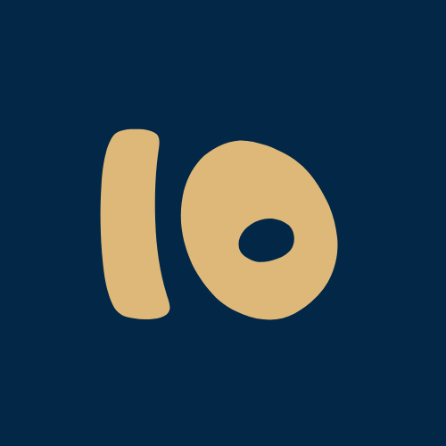

<ion-header class="ion-no-border">
  <ion-toolbar>
    <ion-buttons slot="start">
      <ion-back-button defaultHref="/"></ion-back-button>
    </ion-buttons>
    <ion-title>{{'mini_game'|translate}}</ion-title>
  </ion-toolbar>
</ion-header>

<ion-content>

  <ion-grid>

    <ion-item class="item" lines="none" (click)="goToGame()">
      <ion-thumbnail slot="start" style="border-radius: 20px !important;  background: #fff">
        
      </ion-thumbnail>
      <ion-label>
        <p class="bold primary" style="font-size: 18px">
          Bats à 10
        </p>

      </ion-label>
    </ion-item>


  </ion-grid>

</ion-content>
